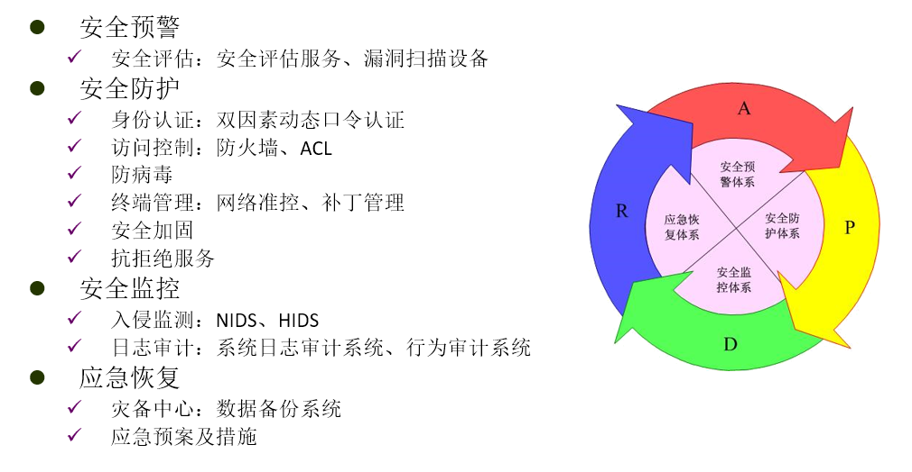
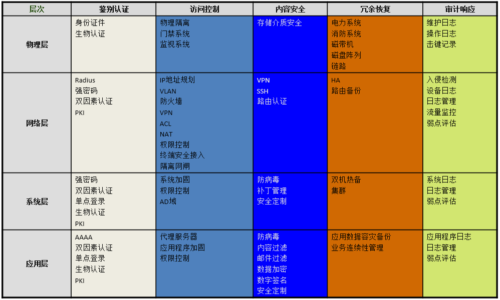

| 版本 | 日期 | 状态 | 修订人 | 摘要 |
|---|---|---|---|---|
| V1.0 | 2016-03-28 | 创建 | HunterFu | 初始版本 |
信息入侵者不管怀有什么用意，采用什么手段，他们都要通过攻击信息的5 个安全特征来达到目的。
这5个安全特征是： 信息系统的保密性、完整性、可用性、可控性和不可否认性（可审查性）是信息安全5大特征。
保密性(Confidentiality):也称机密性，是不将有用信息泄漏给非授权用户的特性。可以通过信息加密、身份认证、访问控制、安全通信协议等技术实现，信息加密是防止信息非法泄露的最基本手段，主要强调有用信息只被授权对象使用的特征。
完整性(Integrity):是指信息在传输、交换、存储和处理过程中，保持信息不被破坏或修改、不丢失和信息未经授权不能改变的特性，也是最基本的安全特征。
可用性(Availability):也称有效性,指信息资源可被授权实体按要求访问、正常使用或在非正常情况下能恢复使用的特性（系统面向用户服务的安全特性）。在系统运行时正确存取所需信息，当系统遭受意外攻击或破坏时，可以迅速恢复并能投入使用。是衡量网络信息系统面向用户的一种安全性能，以保障为用户提供服务。
可控性(Controllability):指网络系统和信息在传输范围和存放空间内的可控程度。是对网络系统和信息传输的控制能力特性。
不可否认性(可审查性):又称拒绝否认性（No-repudiation）、抗抵赖性，指网络通信双方在信息交互过程中，确信参与者本身和所提供的信息真实同一性，即所有参与者不可否认或抵赖本人的真实身份，以及提供信息的原样性和完成的操作与承诺。
在技术上，信息安全就是保证在客观上杜绝对信息的5 种特征的安全威胁，使信息的所有者在主观上对其信息的本源性放心。


后续，我们会按照此安全理论和依据，按照如下路径 安全预警 –> 安全防护 –> 安全监控 –> 应急恢复 逐步建立起信息安全技术体系